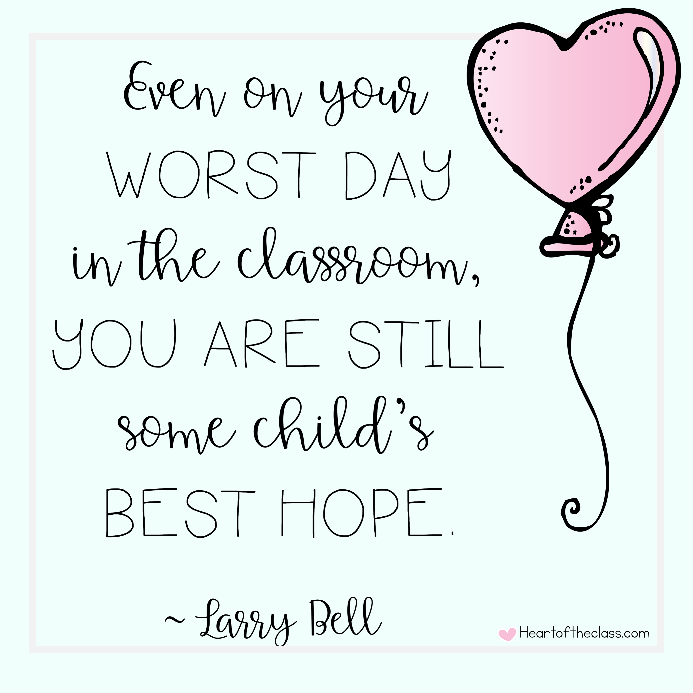
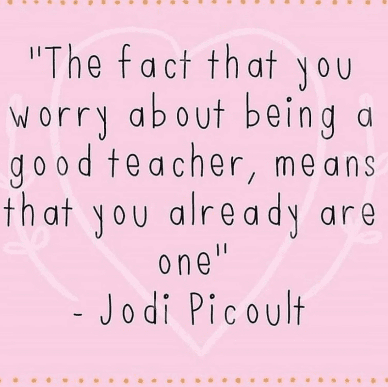
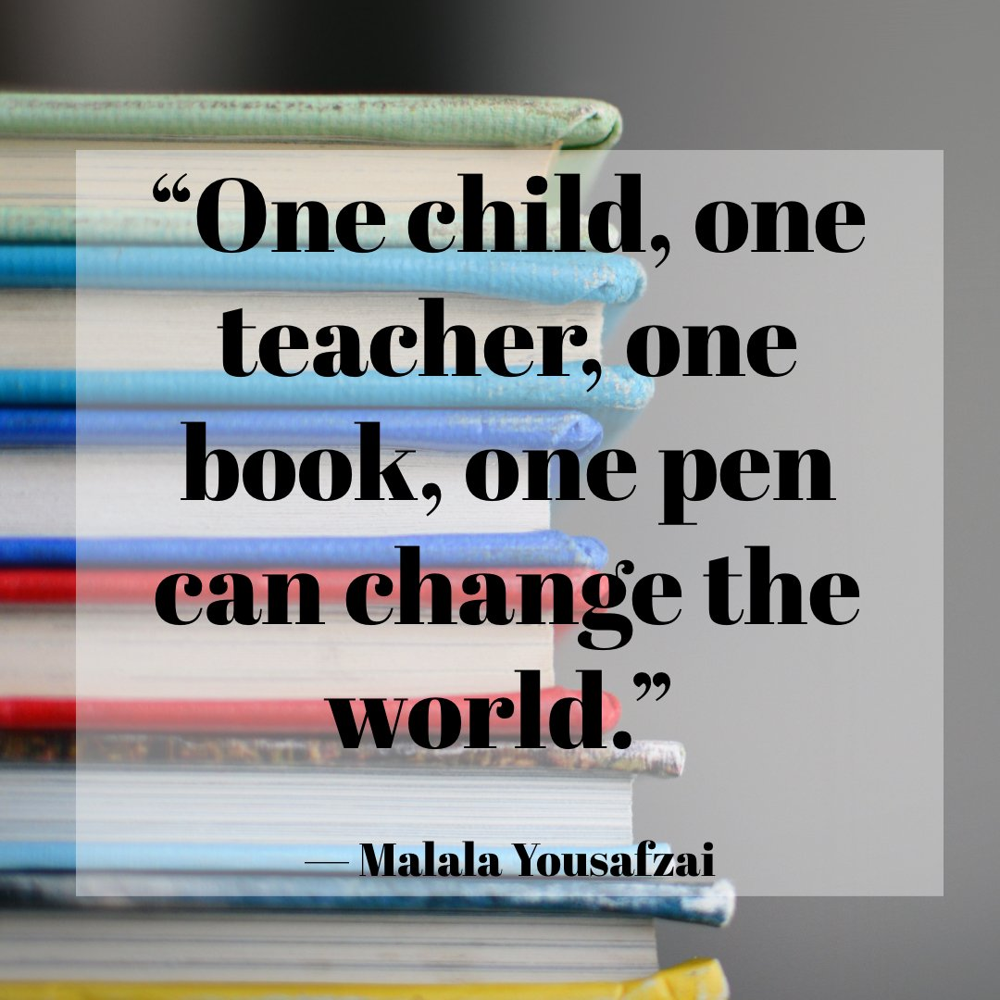

As a student, you come to realize the significance an educator has in your life. Besides our teachers teaching us day by day certain material to extend our knowledge, they help us find a purpose within our lives when we don’t see it. They set us up for success within our communities but above all, they teach us to be self-driven and to thrive even after the hardest climb. Furthermore, as a future secondary educator teaching mathematics, this is the type of class most students fear and despise due to its level of difficulty. As my love towards this subject grew but continued to have some panic while its complexity increased, my Calculus high school teacher eased off that tension. For instance, on the very first day of school, she made us acknowledged that it wasn’t going to be easy but we were going to work as a team. While she taught us, she managed to teach with enthusiasm, which made this class feel like it was a piece of cake at times. When it came to a difficult unit, she shared her struggles within that area to make sure we didn’t get upset with ourselves or feel any less intelligent. As a result, I was encouraged by her techniques because she created this positive atmosphere within her classroom that students actually wanted to attend her class and master mathematical skills. I desire one day to share the same passion towards this subject, where I can empower those within my future classroom.
The purpose is to encourage all student-teachers to continue to strive no matter how difficult things get! Additionally, I want to offer any advice from my student-teaching experience.
"Even on your worst day in the classroom, you are still some child's best hope." - Larry Bell
"The fact that you worry about being a good teacher, means that you already are one." - Jodi Picoult
"One child, one teacher, one book, one pen can change the world." - Malala Yousafzai
